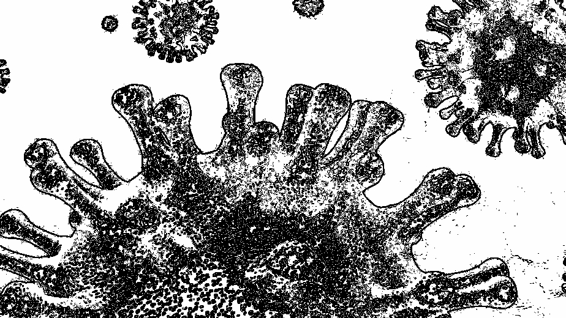

COVID-19 NEWS
Erneut mehr als 2000 Neuinfektionen
NEUINFEKTIONEN
Zum Start in den Februar bleibt die Corona-Lage laut Landeszentrum Gesundheit NRW (LZG) in Köln weiterhin angespannt. In der Nacht zum Dienstag (1. Februar 2022) wurden 2323 Neuinfektionen gezählt
INZIDENZWERT
Der Kölner Inzidenzwert liegt nun bei 838,1 (1. Februar 2022) und ist leicht gesunken. Täglich werden allerdings Nachmeldungen und Korrekturen erwartet.
TODESFÄLLE
Weitere Todesfälle im Zusammenhang mit dem Coronavirus wurden für Dienstag nicht gemeldet. Die Gesamtzahl liegt weiterhin bei 912.
VIRUS VARIANTA

Die Corona-Pandemie ist allgegenwärtig. Trotz steigender Impfquoten, insbesondere in den westlichen Ländern, breitet sich die Delta-Variante unaufhaltsam aus. Die ärmsten Regionen der Welt melden steigende Infektionszahlen. Insbesondere in Afrika und Asien fehlen lebensrettende Impfstoffe. Vielerorts sind die Gesundheitssysteme zusammengebrochen. Besorgniserregend ist die Situation in den vielen überfüllten Flüchtlingscamps überall auf der Welt, wo Abstandhalten nahezu unmöglich ist.
Zunehmend infizieren sich auch Kinder mit COVID-19. In Indonesien ist die Infektionsrate im Sommer 2021 in die Höhe geschnellt. Tausende Jungen und Mädchen sind ernsthaft erkrankt und viele bereits gestorben. In Indien haben in der tödlichen zweiten Welle im Frühjahr 2021 viele Kinder einen oder gar beide Elternteile verloren. Oft müssen sie nun selbst für ihren Lebensunterhalt arbeiten. Ohne Fürsorge und Schutz sind sie von Ausbeutung, Gewalt und Missbrauch bedroht. Noch mehr Mädchen als zuvor werden in Kinderehen gezwungen, weil ihre Familien nicht mehr für sie sorgen können.
COVID-19 hat auch den Hunger in der Welt verschärft. Unzählige Menschen haben ihre Jobs verloren, Lieferketten wurden unterbrochen, Lebensmittel sind knapp und damit oft extrem teuer geworden, wie bereits 2020 im Libanon oder in zahlreichen afrikanischen Ländern. Immer mehr Familien können sich Grundnahrungsmittel kaum noch leisten. Durch die Schulschließungen fiel für viele Kinder die Schulmahlzeit weg, oft die einzige am Tag. Darüber hinaus konnten durch die Pandemie viele bereits unterernährte Kinder nicht mehr medizinisch versorgt werden.
Die Corona-Krise ist gleichzeitig eine Bildungskrise. Seit Beginn der Pandemie konnten mehr als 1,5 Milliarden Kinder zwischenzeitlich nicht mehr zur Schule gehen. Die Unterbrechung oder gar der Abbruch der Schule mindern nicht nur die Zukunftschancen von Kindern auf gravierende Weise, damit steigt auch ihr Risiko, Opfer von Gewalt, Ausbeutung und Frühverheiratung zu werden.